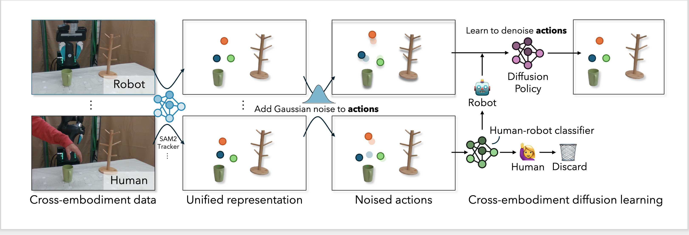
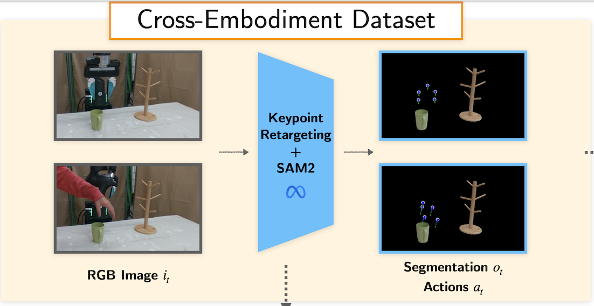
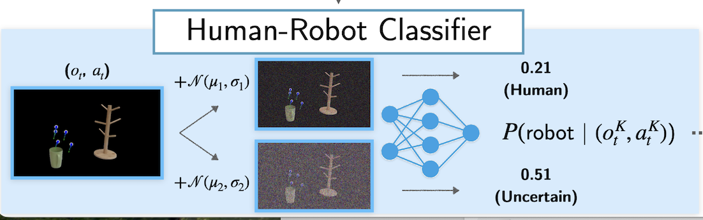
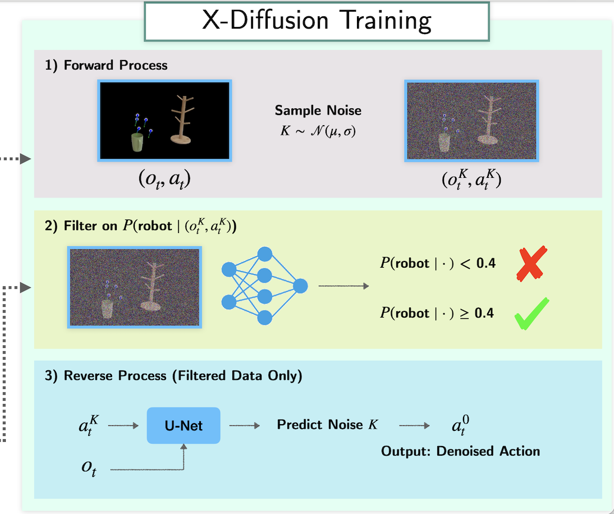

X‑Diffusion: Training Diffusion Policies on Cross‑Embodiment Human Demonstrations

Per‑Task Feasibility Rollouts
Pick a task, then swipe a single row to see Robot, Human‑Feasible, and Human‑Infeasible side by side.
Close Drawer
Abstract
Human videos are fast and scalable to collect, making them appealing for robot learning. But humans and robots differ in embodiment, so direct kinematic retargeting can yield physically infeasible robot actions. Even so, human demonstrations carry high‑level manipulation cues.
We exploit the forward diffusion process: as noise is added to actions, low‑level execution differences fade while task guidance is preserved. X‑DIFFUSION trains a classifier to tell whether a noisy action is human or robot, and only uses human actions for policy training once they are indistinguishable. Robot‑consistent actions supervise fine‑grained denoising at low noise; mismatched human actions provide coarse guidance at higher noise.
Across five manipulation tasks, X‑DIFFUSION improves success and achieves a ~16% higher average rate than the best baseline.
Approach Overview

A. Unifying State and Action Spaces
We convert human videos into robot‑aligned state–action pairs using 3D hand‑pose estimation and lightweight retargeting, and narrow the visual gap with object masks and keypoint overlays.

B. Classifier‑Gated Training
Adding noise strips away embodiment‑specific details so that at higher noise, human and robot actions become hard to distinguish. We use a human‑vs‑robot classifier to identify the earliest indistinguishability step and decide when human demonstrations are safe to learn from.

C. Policy Training
During the reverse denoising phase of diffusion policy learning, we gate supervision: apply the denoising loss to human actions only when their noise level is beyond the indistinguishability step for that sequence. Robot‑consistent actions supervise fine‑grained denoising at low noise, while mismatched human actions provide coarse guidance at higher noise—maximizing human data use while preserving robot feasibility.
